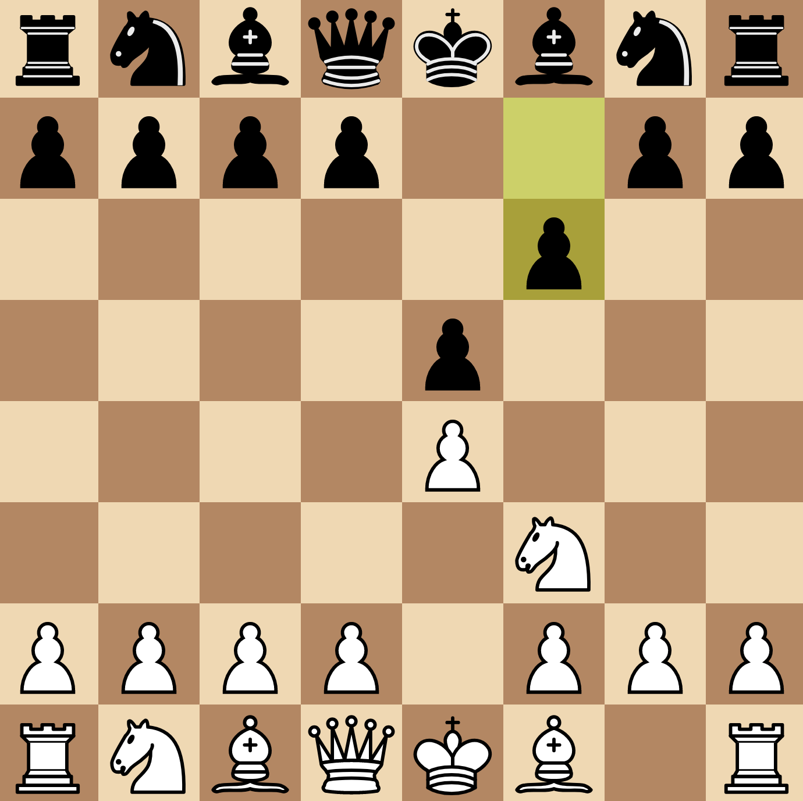
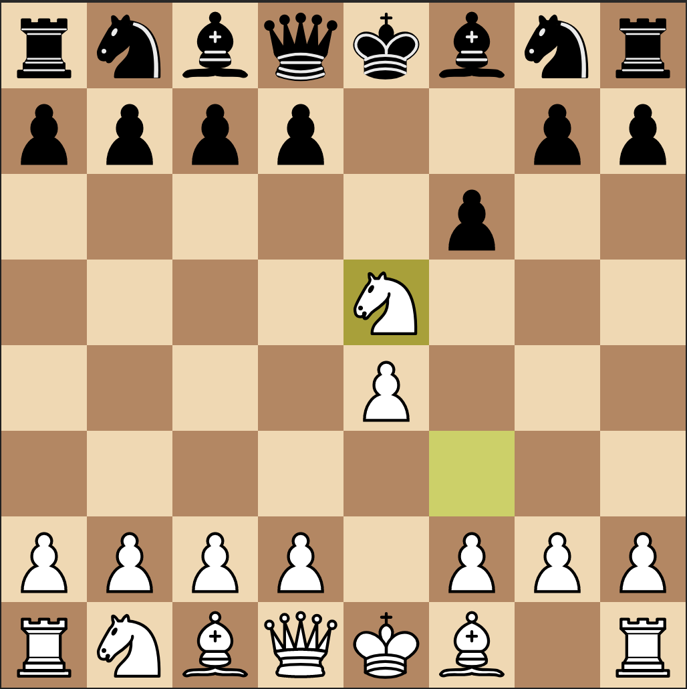

stephen
Bad openings: Damiano Defence
21-10-2018
Today I played as white in a game of chess against the Damiano defence.
I knew it was passive and exposed the kingside, but I was unable to take advantage. Therefore, I decided to take a look closer for next time I encounter it.
The Damiano Defence begins:

This chess opening was named after Pedro Damiano (1480–1544),despite his harsh criticism of it. It is rarely seen but is common among beginners who see it as a simple method to defend the e5 pawn, similar to the Philidor Defence. However, unlike the solid Philidor, the Damiano is not-sound.
The strongest response to the Damiano Defence is for white to capture e5 with their knight. This position is known as the Damiano Gambit (Figure 2). White places their knight under immediate threat by black’s f6 pawn. If black accepts this gambit, and captures the knight with their pawn, white immediately has a much stronger position despite being down the exchange. Weaker players fall into a mating net and stronger players typically play a losing game down material. In my game I didn’t consider this gambit and instead pushed the centre.

If the gambit is accepted, the queen arrives to h5, delivering check, and subsequently the e pawn and h8 rook can be attacked. The opening explorer on lichess.org, using the Lichess all games database, shows that after knight takes e5, all of blacks potential responses favour white (Figure 3).